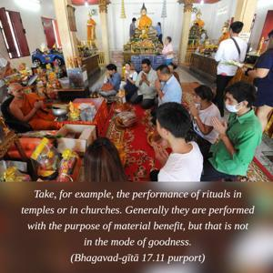

Of sacrifices, the sacrifice performed according to the directions of scripture, as a matter of duty, by those who desire no reward, is of the nature of goodness.

The general tendency is to offer sacrifice with some purpose in mind, but here it is stated that sacrifice should be performed without any such desire. It should be done as a matter of duty. Take, for example, the performance of rituals in temples or in churches. Generally they are performed with the purpose of material benefit, but that is not in the mode of goodness. One should go to a temple or church as a matter of duty, offer respect to the Supreme Personality of Godhead and offer flowers and eatables without any purpose of obtaining material benefit. Everyone thinks that there is no use in going to the temple just to worship God. But worship for economic benefit is not recommended in the scriptural injunctions. One should go simply to offer respect to the Deity. That will place one in the mode of goodness. It is the duty of every civilized man to obey the injunctions of the scriptures and offer respect to the Supreme Personality of Godhead.